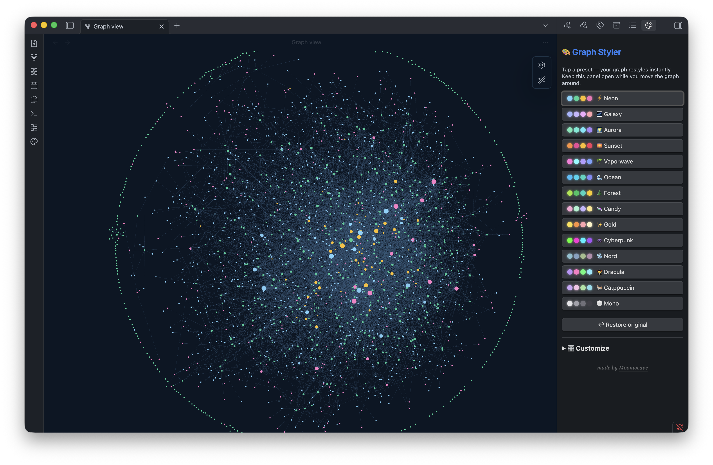
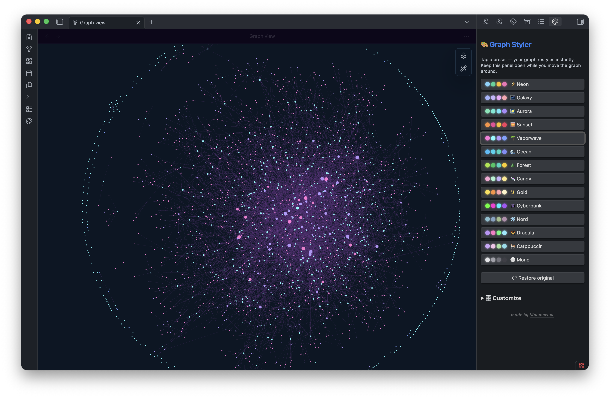
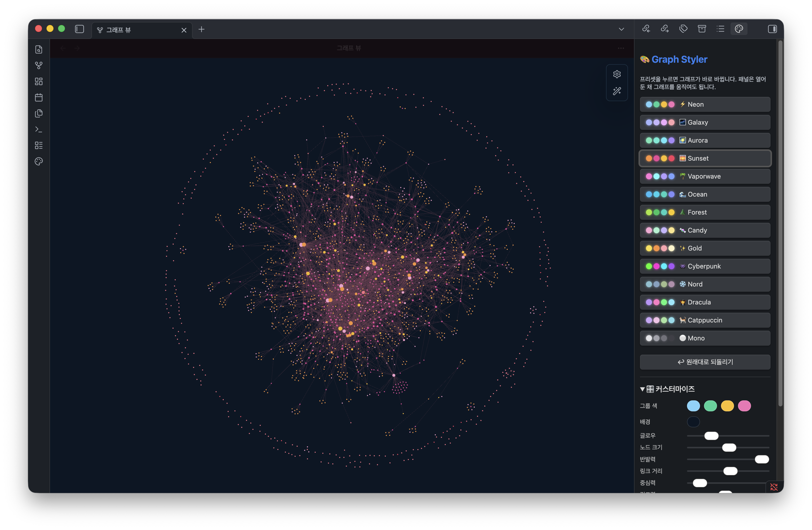

이게 뭐냐면
옵시디언 그래프는 스크린샷이 참 예쁘죠. 근데 그렇게 만들려면 색 그룹, 장력 슬라이더, CSS 스니펫을 다 뒤져야 합니다. Graph Styler는 그걸 클릭 한 번으로. 사이드 패널에서 무드 하나를 누르면 그래프가 바로 바뀝니다.
- 🎨14가지 프리셋네온부터 Nord·Dracula까지
- 🎛️나만의 테마슬라이더로 조절해 저장
- 🌍어떤 vault나색이 내 폴더(또는 태그)에 자동 매핑
- ↩︎안전하게원본 백업 + 한 번에 되돌리기
같은 vault, 클릭 한 번 차이


그래프는 왜 예뻐 보일까
옵시디언 그래프가 예쁜 건 사실 몇 가지가 합쳐진 결과예요. 원리만 알면 직접도 만들 수 있고, Graph Styler가 그걸 왜 한 번에 해주는지도 이해돼요.
-
🎨
색 그룹
폴더나 태그별로 노드에 색을 입혀요. 설정 → 그래프 → Groups에서 쿼리(
path:"폴더"또는tag:#태그)와 색을 정해요. - 🧲 장력 (forces) 노드가 모이고 퍼지는 정도예요. 그래프 설정의 Forces에서 반발력·링크 거리·중심력 슬라이더로 조절해요. 반발력↑·링크거리↑ = 시원하게 퍼진 은하.
- ✨ 글로우 · 배경 빛나는 네온 느낌은 CSS 스니펫으로 만들어요. 설정 → 화면 → CSS 스니펫에 파일을 넣고 켜면 돼요. (바로 아래에 쓸 수 있는 코드가 있어요.)
-
🔗
모양 = 링크
그래프 모양은 노트를 어떻게 연결(링크)했는지가 만들어요.
[[노트]]로 링크를 많이 걸수록 촘촘하게 이어진 별·은하 모양이 돼요. 예쁜 그래프는 잘 정리한 결과인 셈.
이걸 매번 손으로 맞추기 번거로우니까, Graph Styler가 프리셋 하나로 색·장력·글로우를 한 번에 적용해줘요. 색 그룹도 내 폴더(또는 태그)에 자동으로 맞춰지고요.
직접 해보기 — 글로우 CSS
플러그인 없이 글로우만 직접 넣고 싶다면: 아래 코드를 <vault>/.obsidian/snippets/graph-glow.css 파일로 저장하고 설정 → 화면 → CSS 스니펫에서 켜세요. 다크 모드 기준이에요. (Graph Styler를 쓰면 이건 자동이에요.)
/* graph glow — .obsidian/snippets/graph-glow.css */
.theme-dark .graph-view.color-circle { color: #7dd3fc; }
.theme-dark .graph-view.color-line { color: #2b4a63; }
.theme-dark .graph-view.color-fill-tag { color: #f472b6; }
.graph-view-content {
background: radial-gradient(circle at 50% 45%, #16304a, #0b1624 70%) !important;
}
.graph-view-content canvas { filter: saturate(1.35) brightness(1.12); }설치 (처음이어도 OK)
옵시디언 데스크탑 앱이 필요해요. 아직 베타라 BRAT(깃허브에서 베타 플러그인을 바로 설치해주는 도구)으로 설치합니다 — 커뮤니티 스토어 등재 예정.
- 1설정 → 커뮤니티 플러그인으로 가서 '제한 모드'를 끄고 커뮤니티 플러그인을 켜요.
- 2탐색(Browse)에서 BRAT을 검색해 설치하고 활성화해요.
- 3명령어 팔레트(Cmd/Ctrl + P)를 열어 BRAT: Add a beta plugin을 실행하고 아래 주소를 붙여넣어요:
moonweave/obsidian-graph-styler- 4설정 → 커뮤니티 플러그인 → 설치된 플러그인에서 Graph Styler를 켜요.
- 5끝! 그래프 뷰를 열고 왼쪽 리본의 🎨 아이콘을 누르면 패널이 떠요.
수동 설치: main.js · manifest.json · styles.css를 <vault>/.obsidian/plugins/graph-styler/에 넣고 켜기.
🤖 AI로 더 꾸미기
더 깊게 만지고 싶다면, 아래 프롬프트를 ChatGPT나 Claude에 복붙하세요. 결과(색·CSS·그룹 쿼리)를 Graph Styler 커스터마이즈나 CSS 스니펫에 그대로 넣으면 돼요. [ ] 부분만 내 걸로 바꾸세요.
옵시디언 그래프용 색 테마를 만들어줘. '[깊은 바다]' 같은 무드로, 어두운 배경 1색 + 서로 잘 구분되는 노드 색 4개를 hex 코드로 줘. 각 색이 어떤 느낌인지 한 줄씩.
옵시디언 그래프 뷰에 네온 글로우를 주는 CSS 스니펫을 하나 만들어줘. 다크 모드(.theme-dark) 기준으로, 노드는 [시안]색, 배경은 어둡게, 은은하게 빛나게. .graph-view.color-circle, .graph-view-content 배경, canvas filter를 써서 파일 하나로.
내 옵시디언 폴더가 [Projects, Daily, Ideas]야. 각 폴더에 어울리는 조화로운 색을 hex로 정하고, 그래프 Groups에 넣을 path:"폴더" 쿼리 + 색 형태로 정리해줘.
내 옵시디언 그래프가 너무 뭉쳐 보여. forces(반발력·링크 거리·중심력)를 어떤 값으로 맞추면 시원하게 퍼질지, 그리고 노트를 어떻게 더 연결하면 그래프가 예뻐질지 알려줘.
사용법
- 1그래프 뷰를 열고, 왼쪽 리본의 🎨 팔레트 아이콘을 누르면 오른쪽에 패널이 떠요.
- 2 프리셋을 누르면 그래프가 즉시 바뀝니다. 패널은 열어둔 채 그래프를 움직여도 돼요.
- 3 🎛️ 커스터마이즈를 열어 장력·크기·색·글로우를 슬라이더로 조절하고 💾 저장하면 내 프리셋이 돼요.
- 4언제든 ↩︎ 원래대로 되돌리기로 복구할 수 있어요. 원본 설정은 자동 백업됩니다.
색은 어떻게 매핑되나요? 내 vault에서 노트가 많은 폴더(폴더가 없으면 태그)에 프리셋 색이 자동으로 입혀져요. 옵시디언의 네이티브 그래프 그룹에 기록되니 설정에서 직접 수정도 됩니다.